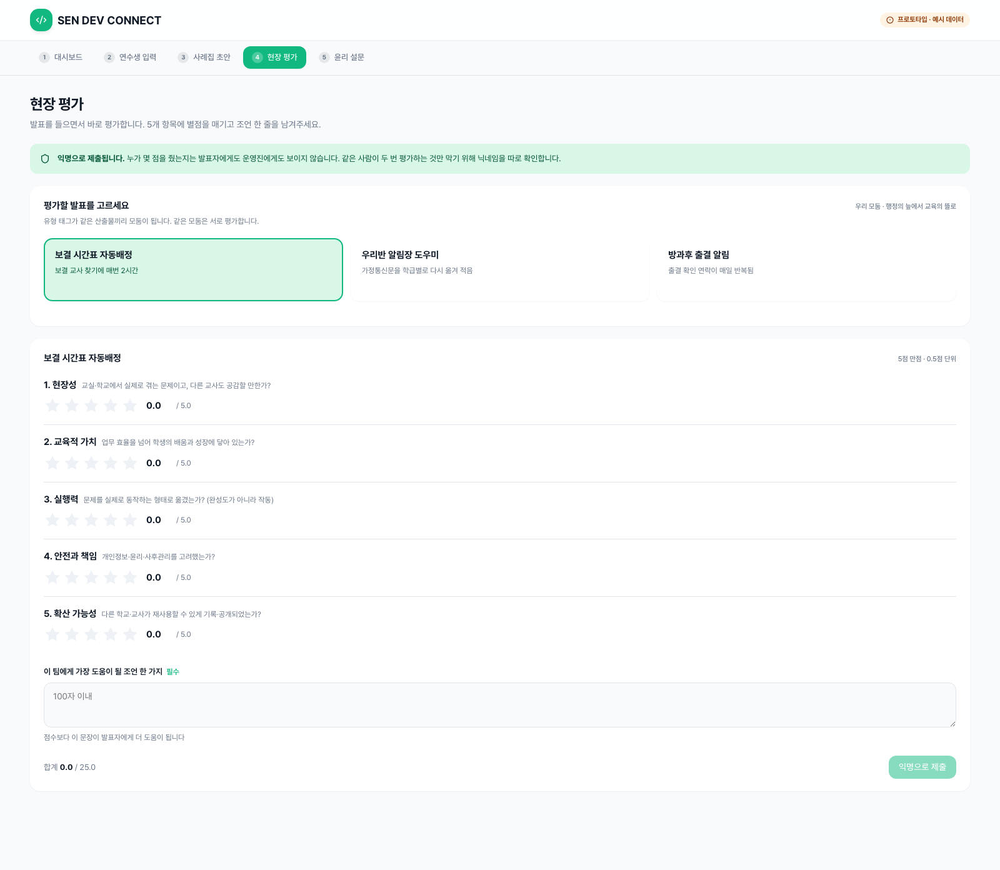
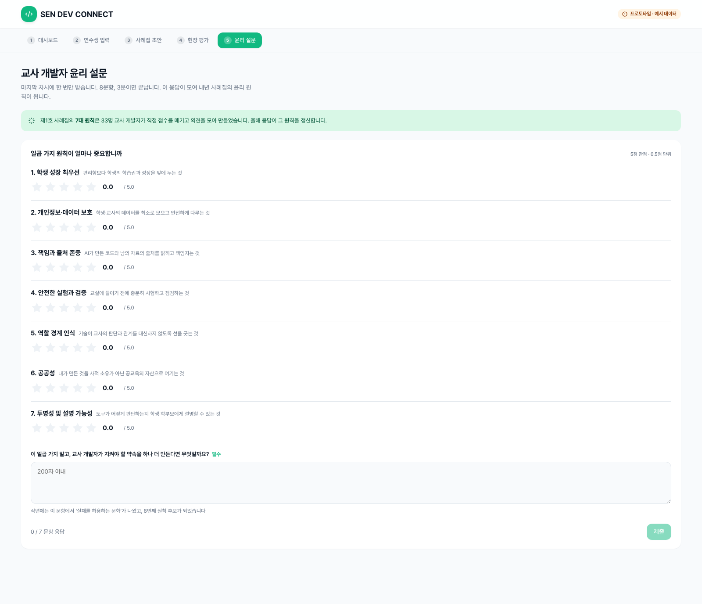

1
대시보드
전체 참여 현황, 차시별 활동, 문제 지도, 윤리 인사이트와 산출물을 한눈에 확인합니다.

아래 5개 화면은 각각 원본 너비 1600px로 축소 없이 배치했습니다.
전체 참여 현황, 차시별 활동, 문제 지도, 윤리 인사이트와 산출물을 한눈에 확인합니다.
틔움 → 키움 → 나눔 3단계로 활동을 기록하고, AI 초안을 검토·수정해 확정합니다.

입력한 활동 내용을 A4 사례집 양식으로 정리하고 인쇄하거나 PDF로 저장합니다.

발표를 들으며 5개 항목을 익명 별점으로 평가하고 동료에게 조언을 남깁니다.

7대 원칙을 점수와 서술형 응답으로 돌아보고 다음 연도의 원칙 개선에 반영합니다.
